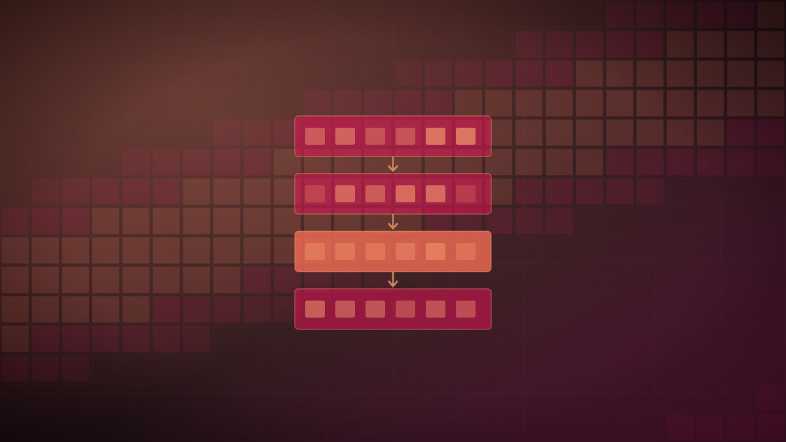

Z.ai holds back GLM-5.3's open weights after its cyber capability outgrew its training
The Beijing lab says post-training pushed the model's vulnerability-finding ability further than planned, so it is delaying the open-weights release while pairing the launch with a free security-auditing program.

Original cover art, generated for this story. THE VISSION does not republish third-party press imagery.
- Z.ai released GLM-5.3 through its own coding plan on Aug. 14 but is delaying the public release of its open weights by about two weeks, pending additional safety review.
- The model topped Terminal Bench 3.0 among open-source systems and found more than 2,400 vulnerabilities across 269 open-source projects, roughly half rated medium severity or higher, according to the company.
- On CyberGym, Z.ai says GLM-5.3 outperformed Claude Mythos 5 at finding code vulnerabilities, while trailing it on two other cybersecurity benchmarks.
- Alongside the model, Z.ai launched "Shield of Open Source," offering free security audits, code-auditing tools and usage quotas to open-source maintainers — what one researcher called a domestic answer to Anthropic's Project Glasswing.
Z.ai released GLM-5.3 on Aug. 14 through its coding plan and API, but is holding back the model's open weights — normally released alongside a launch — for about two weeks while it completes additional safety review. The company says the delay follows internal testing that found the model's cybersecurity capability grew faster during post-training than it had anticipated.
On Terminal Bench 3.0, a command-line coding benchmark, GLM-5.3 scored the highest of any open-source model Z.ai has measured, and the company reports a roughly 50% improvement over its predecessor GLM-5.2 on its internal coding benchmark. Running the model against real code, Z.ai says it surfaced more than 2,400 vulnerabilities across 269 open-source projects, with roughly half rated medium severity or higher. On CyberGym, a vulnerability-discovery benchmark, the company says GLM-5.3 outperformed Anthropic's Claude Mythos 5, though it trailed that model on two other cybersecurity measures.
Alongside the model, Z.ai launched "Shield of Open Source," a program offering free security audits and vulnerability-patching assistance, automated code-auditing tools through its ZCode platform, and free model-usage quotas for open-source maintainers. Gabriel Wagner, a researcher at Concordia AI, described the pairing as "a kind of Project Glasswing with Chinese characteristics that sees openness as an asset rather than a drawback" — a reference to Anthropic's own cyber-safety initiative. Z.ai said the earlier GLM-5.2 had already been deployed by Hugging Face in July to help counter an autonomous cyberattack.
Z.ai framed the trade-off directly: "When the strongest spear is locked in the hands of a few, the best shield must belong to everyone," the company said, arguing that pairing a capable model with free defensive tooling is a better response to dual-use risk than withholding the model indefinitely.
An open-weights lab voluntarily delaying a release over its own model's offensive capability is a genuinely new posture for the Chinese open-source AI scene, which has generally competed on speed to release rather than caution about what gets released. Whether "Shield of Open Source" is a substantive safety program or a two-week publicity buffer before the same weights land on Hugging Face regardless will be testable in about two weeks, when the delay Z.ai announced is due to end.